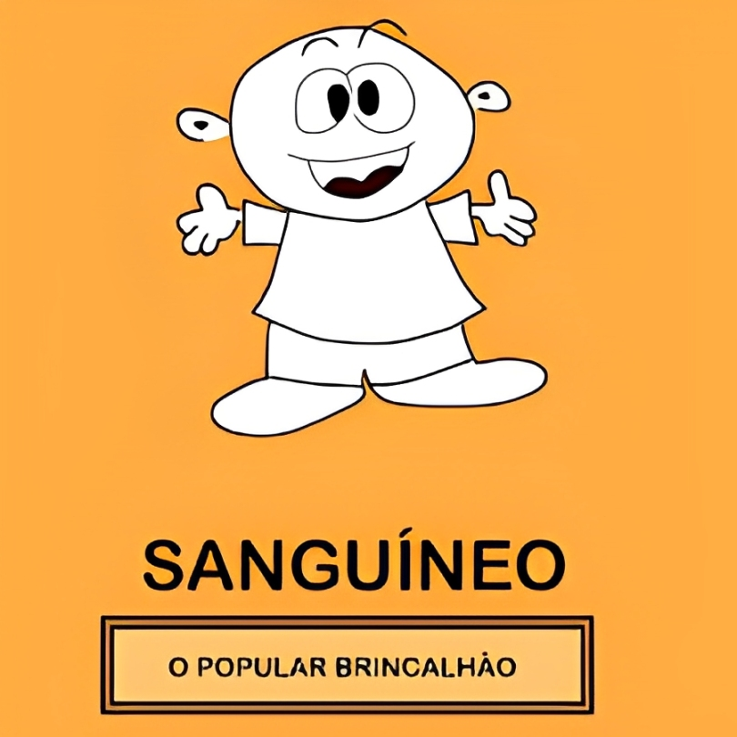
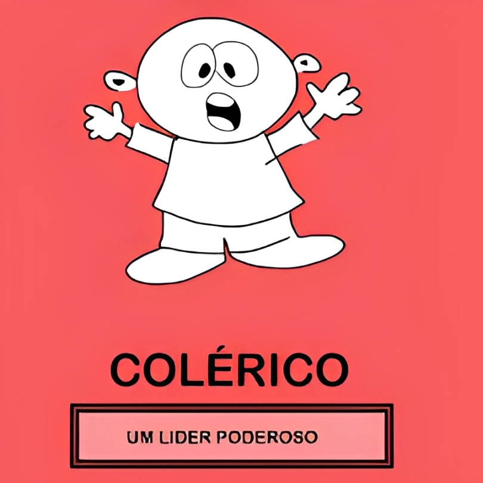
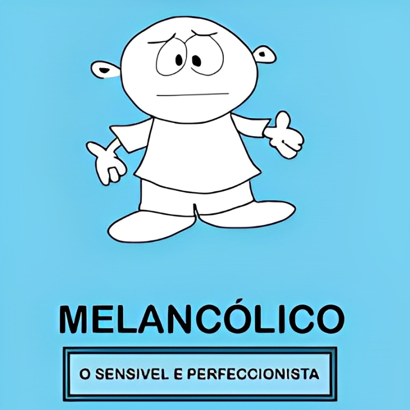
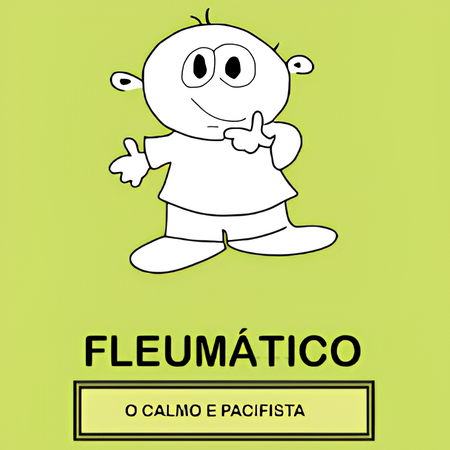

Os quatro temperamentos
Qual é o seu temperamento?
Sanguíneo, colérico, melancólico ou fleumático — e, sobretudo, qual das doze combinações descreve você. Oitenta perguntas, resposta sim ou não, sem pensar demais.




- Fases
- 4
- Perguntas
- 80
- Duração
- 6 minutos
As respostas não saem do seu aparelho. Nenhum dado é coletado ou enviado.
Pergunta 1
—
S sim · N não · ← volta
Resultado
—
—
A combinação
—
—
Composição completa
Cada fase do teste corresponde a um temperamento. O percentual é o número de respostas “sim” daquela fase dividido pelo total de “sim” do teste — 0 de 80.